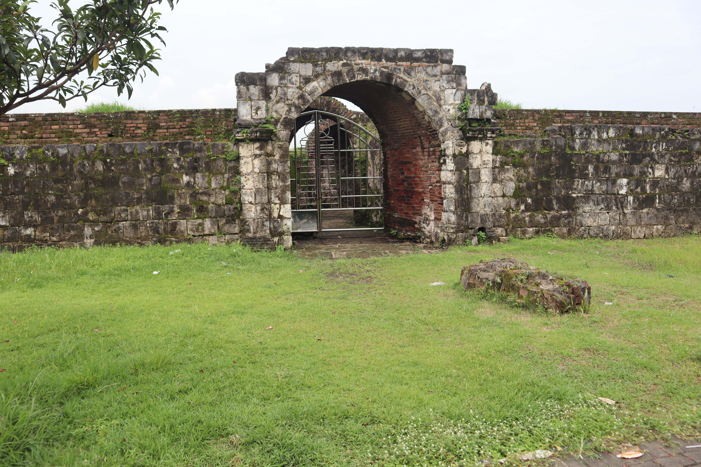

Galeri
Penampakan reruntuhan Keraton Surosowan yang masih berdiri hingga kini

Informasi Umum
Fakta-fakta dasar mengenai situs bersejarah ini
✦ Tentang Keraton Surosowan
Keraton Surosowan adalah istana sekaligus benteng pertahanan yang menjadi pusat Kesultanan Banten sejak abad ke-16 hingga awal abad ke-19. Nama Surosowan berasal dari bahasa Jawa-Kuno yang bermakna "tempat sang pemimpin berdiri teguh."
Kompleks ini berfungsi ganda: sebagai kediaman sultan beserta keluarga dan aparatur kerajaan, sekaligus sebagai pusat kegiatan politik, ekonomi, sosial, dan budaya Kerajaan Banten. Dindingnya yang tebal—tersusun dari bata besar dan karang laut— dirancang untuk menahan serangan dari berbagai arah.
Kini hanya dinding-dinding kokoh dan fondasi bangunan yang tersisa, namun situs ini tetap menjadi salah satu destinasi wisata sejarah paling penting di Indonesia, khususnya di kawasan Banten Lama.
Perjalanan Sejarah
Dari kejayaan kesultanan hingga reruntuhan yang tersisa
Pembangunan Awal
Maulana Hasanuddin, putra Sunan Gunung Jati dan sultan pertama Banten, membangun kompleks keraton ini sebagai pusat pemerintahan Kesultanan Banten yang baru berdiri. Dinding awal dibangun tanpa bastion menggunakan bata besar bercampur tanah liat.
Diperkuat Sultan Maulana Yusuf
Sultan Maulana Yusuf memperkuat tembok keraton seluas ± 3,8 hektar dengan dinding bata dan karang laut. Parit (moat) juga dibangun mengelilingi kompleks sebagai pertahanan tambahan. Di era ini Surosowan mulai menyerupai benteng sejati.
Puncak Kejayaan Banten
Di bawah Sultan Ageng Tirtayasa (1651–1683), Banten mencapai puncak kejayaannya sebagai bandar dagang internasional. Keraton Surosowan diperluas dan diperindah, menjadi simbol kekuasaan yang disegani bangsa-bangsa Eropa dan Asia.
Konflik Internal & Campur Tangan VOC
Perang saudara antara Sultan Ageng Tirtayasa dan putranya, Sultan Haji, membuka celah bagi VOC Belanda untuk ikut campur. Dengan bantuan VOC, Sultan Haji berhasil merebut tahta, tetapi kedaulatan Banten perlahan tergerus.
Dihancurkan Pasukan Belanda
Atas perintah Gubernur Jenderal Herman Willem Daendels, pasukan Belanda menyerang dan menghancurkan Keraton Surosowan. Bangunan utama diratakan dan Kesultanan Banten secara resmi dibubarkan. Reruntuhan yang kita lihat hari ini adalah sisa dari penghancuran tersebut.
Pelestarian sebagai Cagar Budaya
Pemerintah Indonesia menetapkan situs ini sebagai Cagar Budaya Nasional. Berbagai upaya arkeologi dan pemugaran terus dilakukan. Kini situs terbuka untuk umum sebagai destinasi wisata sejarah di kawasan Banten Lama, Serang.
Fun Facts
Hal-hal menarik yang mungkin belum kamu tahu tentang Surosowan
Bata Tanpa Semen Modern
Dinding-dinding Surosowan yang bertahan ratusan tahun dibangun tanpa semen modern. Para pembangunnya menggunakan campuran bata, karang laut, dan tanah liat—teknik tradisional yang ternyata sangat tahan lama.
Kolam Mandi Sultan
Di dalam kompleks terdapat kolam pemandian (Tamansari) khusus sultan dan keluarganya. Strukturnya masih bisa dilihat hingga kini dan menjadi salah satu bagian yang paling sering difoto pengunjung.
Dikelilingi Parit
Seperti kastil-kastil Eropa, Surosowan dahulu dikelilingi parit berair (moat) sebagai pertahanan alami. Bekas parit tersebut masih dapat diidentifikasi oleh para arkeolog hingga saat ini.
Muncul di Peta Eropa Kuno
Pelabuhan dan keraton Banten tergambar dalam peta-peta pelayaran Eropa dari abad ke-16 dan 17, membuktikan bahwa Banten adalah salah satu kota paling dikenal di Asia Tenggara pada masa itu.
Sempat Dikunjungi Inggris
Pedagang Inggris dari East India Company pernah mendirikan kantor dagang di Banten pada awal abad ke-17, menjadikan Surosowan saksi bisu persaingan dagang antara Inggris dan Belanda di Nusantara.
Jatuh dari Dalam
Perang antara Sultan Ageng Tirtayasa dan anaknya sendiri adalah titik balik terbesar Banten. Konflik ini dimanfaatkan VOC untuk menguasai kerajaan dari dalam—tanpa perlu menaklukkan benteng secara langsung.
Lebih Besar dari yang Terlihat
Luas awal kompleks diperkirakan lebih dari 30.000 m²—setara dengan sekitar empat lapangan sepak bola. Yang tersisa hari ini hanya sebagian kecil dari kemegahan aslinya.
Empat Fase Pembangunan
Para arkeolog mengidentifikasi bahwa Surosowan dibangun dalam setidaknya empat fase berbeda selama beberapa generasi sultan, dengan setiap fase membawa perluasan dan penguatan struktur.
Quiz Sejarah
Seberapa dalam kamu mengenal Benteng Surosowan?
Soal 1 dari 5
Situs Terdekat di Banten Lama
Keraton Surosowan bukan satu-satunya saksi kejayaan Kesultanan Banten
Keraton Kaibon
Istana sang Ibu Ratu
Dibangun sekitar 1815 sebagai kediaman Ratu Aisyah, ibunda Sultan Muhammad Syafiuddin yang naik tahta saat masih berusia 5 tahun. Nama Kaibon berasal dari kata ke-ibu-an — tempat yang bersifat seperti ibu.
Masjid Agung Banten
Masjid Bersejarah Abad ke-16
Dibangun oleh Sultan Maulana Hasanuddin pada abad ke-16, masjid ini masih berdiri kokoh dan aktif digunakan hingga hari ini. Arsitekturnya memadukan gaya Jawa, Eropa, dan Tiongkok secara harmonis.
Benteng Speelwijk
Kubu Pertahanan VOC
Benteng VOC yang dibangun pada akhir abad ke-17 di tepi pantai Banten. Menjadi simbol kontrol Belanda atas jalur perdagangan Selat Sunda setelah Kesultanan Banten melemah akibat konflik internal.
Tips Kunjungan Kawasan Ketiga situs ini berada dalam radius kurang dari 1 km dari Keraton Surosowan. Rencanakan kunjungan setengah hari untuk menjelajahi seluruh kawasan Banten Lama sekaligus.
Informasi Kunjungan
Rencanakan kunjunganmu ke situs bersejarah ini
📍 Alamat
Kampung Banten, Kec. Kasemen,
Kota Serang, Banten 42191
Indonesia
🕗 Jam Buka
Setiap hari
08.00 – 17.00 WIB
(termasuk hari libur nasional)
🎟️ Tiket Masuk
Terjangkau / gratis
(tarif resmi dapat berubah,
cek saat berkunjung)
💡 Tips Berkunjung
- Kenakan alas kaki yang nyaman
- Bawa air minum yang cukup
- Datang pagi untuk menghindari panas
- Gabungkan dengan kunjungan ke Masjid Agung Banten yang berdekatan